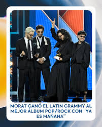
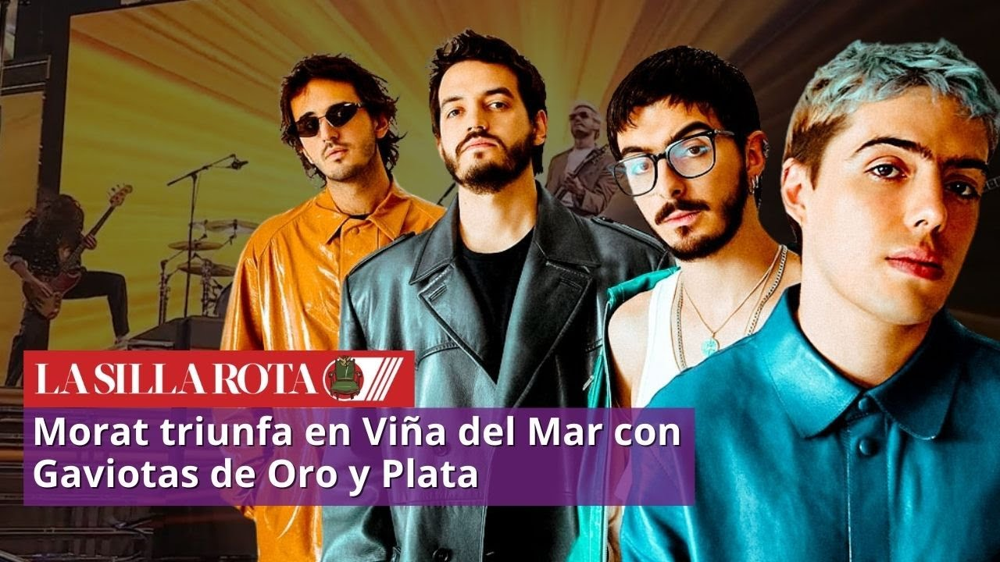

|
Pagina de Fans de Morat |
Hito Histórico: Ganadores del Latin Grammy 2025
Morat ha alcanzado la cima del reconocimiento musical al ganar el **Latin Grammy 2025** en la categoría de "Mejor Álbum Pop/Rock" por su reciente disco 'Ya Es Mañana'. Este premio se suma a sus nominaciones previas como "Mejor Artista Nuevo" y "Mejor Álbum de Pop Contemporáneo", consolidándolos como referentes indiscutibles de la música orgánica en español.


Dominio Total: Gaviotas en Viña del Mar
En su debut en el prestigioso Festival de **Viña del Mar 2025**, la banda colombiana conquistó al "Monstruo" de la Quinta Vergara, llevándose a casa tanto la **Gaviota de Plata como la Gaviota de Oro**. Además, han sido galardonados en múltiples ocasiones en LOS40 Music Awards como "Mejor Artista Revelación" y "Mejor Grupo en Vivo", demostrando su poderío sobre el escenario.
Récords Mundiales y Diamantes de Ventas
Con más de **55 Discos de Platino** y **2 Discos de Diamante**, Morat ha roto todas las expectativas. Son la primera banda de pop en español en superar los 20 mil millones de reproducciones en Spotify. Recientemente, lograron un **Guinness World Record** por la mayor concentración de fans en pijama durante sus conciertos, demostrando la fidelidad única de su comunidad.
.jpg)